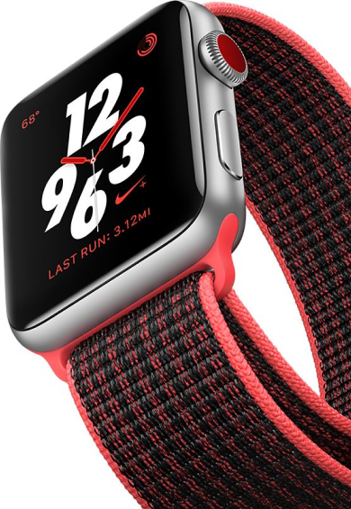

Freedom calls.
Answer a call from your surfboard. Ask Siri to send a message. Stream your favorite songs on your run. And do it all while leaving your phone behind. Introducing Apple Watch Series 3 with cellular. Now you have the freedom to go with just your watch.
